-400.jpg)

Oklahoma City Travel Guide
Capital and largest city of Oklahoma is a major urban center offering a diverse blend of cultural attractions, entertainment venues, and civic institutions.
Places to See in Oklahoma City

Michael Barera, CC BY-SA 4.0, via Wikimedia Commons; Image Size Adjusted
.jpg){kind=link}
Architectural DNA
Suspended spiral staircase installation bridging two buildings with a striking blend of industrial design and urban artistry.

Michael Barera, CC BY-SA 4.0, via Wikimedia Commons; Image Size Adjusted
Armstrong Auditorium
World-class performing arts venue featuring classical, jazz, ballet, and cultural performances in an opulent architectural setting.
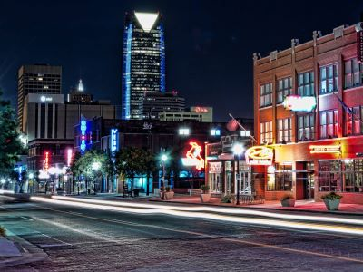
Michael Barera, CC BY-SA 4.0, via Wikimedia Commons; Image Size Adjusted
Automobile Alley
Historic commercial corridor transformed into a vibrant district of shops, restaurants, art installations, and nightlife venues.

Michael Barera, CC BY-SA 4.0, via Wikimedia Commons; Image Size Adjusted
Boathouse District
Riverfront recreation hub offering Olympic-level rowing, whitewater rafting, adventure courses, and scenic trails for all ages.
-400.jpg)
Michael Barera, CC BY-SA 4.0, via Wikimedia Commons; Image Size Adjusted
Bricktown
Entertainment district just east of downtown Oklahoma City and was formerly a major warehouse district.

Michael Barera, CC BY-SA 4.0, via Wikimedia Commons; Image Size Adjusted
Factory Obscura Mix-Tape
Immersive, multi-sensory art installation featuring handcrafted environments inspired by the emotional power of music.

Michael Barera, CC BY-SA 4.0, via Wikimedia Commons; Image Size Adjusted
First Americans Museum
Expansive cultural center showcasing the history, art, and traditions of the 39 tribal nations in Oklahoma through immersive exhibits and architecture.
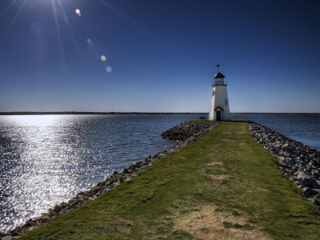
Michael Barera, CC BY-SA 4.0, via Wikimedia Commons; Image Size Adjusted
Lake Hefner
Urban lake offering scenic trails, boating, fishing, and lakeside dining with iconic lighthouse views and vibrant sunsets.

Carol M. Highsmith, Public domain, via Wikimedia Commons; Image Size Adjusted
Milk Bottle Grocery
Grocery building with a large metal Braum's milk bottle atop its roof
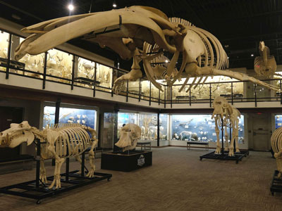
OKJaguar, CC BY-SA 4.0, via Wikimedia Commons; Image Size Adjusted

Museum of Osteology
Museum devoted to the study of bones and skeletons (osteology) displaying over 350 skeletons of animal species from all over the world

Michael Barera, CC BY-SA 4.0, via Wikimedia Commons; Image Size Adjusted
Myriad Botanical Gardens
Lush 15-acre urban garden featuring tropical conservatory, ornamental landscapes, walking trails, and seasonal family-friendly attractions.

OKJaguar, CC BY-SA 4.0, via Wikimedia Commons; Image Size Adjusted
National Cowboy and Western Heritage Museum
Extensive museum dedicated to preserving and interpreting the art, culture, and history of the American West through galleries, artifacts, and immersive exhibits.
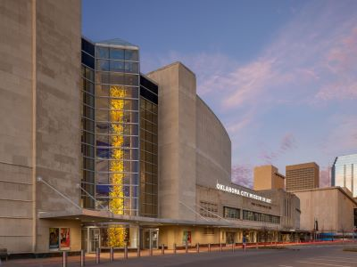
OKJaguar, CC BY-SA 4.0, via Wikimedia Commons; Image Size Adjusted
Oklahoma City Museum of Art
Downtown museum showcasing global art collections, a world-renowned Chihuly glass exhibit, and an independent film theater.

See page for author, CC BY-SA 3.0, via Wikimedia Commons; Image Size Adjusted

Oklahoma City National Memorial
Memorial that honors the victims, survivors, rescuers, and all who were affected by the Oklahoma City bombing on April 19, 1995

Michael Barera, CC BY-SA 4.0, via Wikimedia Commons; Image Size Adjusted
Oklahoma Contemporary Arts Center
Modern arts center offering free exhibitions, performances, and educational programs in a striking architectural space dedicated to contemporary creativity.
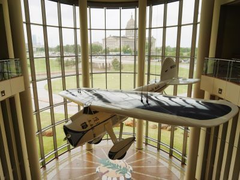
See page for author, CC BY-SA 3.0, via Wikimedia Commons; Image Size Adjusted
Oklahoma History Center
Smithsonian-affiliated museum offering immersive exhibits, outdoor trails, and a research center exploring Oklahoma’s diverse cultural and historical legacy.

Michael Barera, CC BY-SA 4.0, via Wikimedia Commons; Image Size Adjusted
Oklahoma National Guard Museum
Military history museum featuring immersive exhibits, outdoor vehicle displays, and artifacts honoring the legacy of the Oklahoma National Guard.

Michael Barera, CC BY-SA 4.0, via Wikimedia Commons; Image Size Adjusted
Oklahoma Railway Museum
Family-friendly museum featuring historic locomotives, railcars, and hands-on exhibits that bring Oklahoma’s railroad heritage to life.
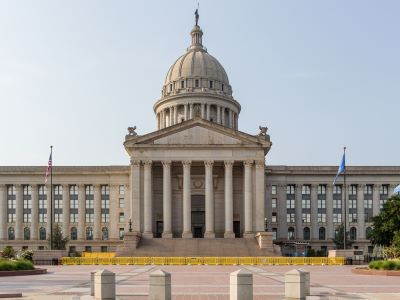
See page for author, CC BY-SA 3.0, via Wikimedia Commons; Image Size Adjusted
Oklahoma State Capitol
Historic Greco-Roman government building housing all three branches of state government and the largest public art collection in Oklahoma.

Michael Barera, CC BY-SA 4.0, via Wikimedia Commons; Image Size Adjusted
RiverSport Adventures
Outdoor adventure park offering whitewater rafting, zip lines, surfing, and climbing walls in a dynamic riverside setting.
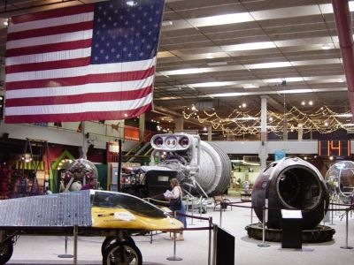
See page for author, CC BY-SA 3.0, via Wikimedia Commons; Image Size Adjusted
Science Museum Oklahoma
Expansive hands-on science museum featuring interactive exhibits, a planetarium, live shows, and a whimsical science-themed play city for kids.

Michael Barera, CC BY-SA 4.0, via Wikimedia Commons; Image Size Adjusted
Scissortail Park
Expansive urban park featuring gardens, a lake, playgrounds, concerts, and trails, offering year-round recreation and community events.

Michael Barera, CC BY-SA 4.0, via Wikimedia Commons; Image Size Adjusted
Stockyards City
Historic Western district featuring cattle auctions, cowboy gear shops, steakhouses, and cultural attractions rooted in Oklahoma’s ranching heritage.

Michael Barera, CC BY-SA 4.0, via Wikimedia Commons; Image Size Adjusted
Winchester Drive-In
Classic drive-in theater offering double-feature screenings, retro charm, and family-friendly entertainment under the stars.
Overview
Oklahoma City is the capital and largest city of Oklahoma, in the center of the state, and it is one of the largest cities in the country by land area. It is known for its Western and cowboy heritage, for the Oklahoma City National Memorial, which honors the victims of the 1995 bombing, and for its role as an energy capital, with oil wells that once stood even on the grounds of the State Capitol. The city also has a thriving downtown with entertainment districts, a riverfront, and the NBA's Thunder.
Visitors come to Oklahoma City for the National Memorial and Museum, for the National Cowboy & Western Heritage Museum, and for the First Americans Museum. They also come for Bricktown, for Stockyards City and its steakhouses, for the Boathouse District, and for Thunder basketball, and Route 66 attractions and the Oklahoma State Capitol are also popular.
History
Oklahoma City was born in a single day. On April 22, 1889, the federal government opened the Unassigned Lands for settlement in a land run, and thousands of settlers raced on horseback and in wagons to claim lots, creating a city of about 10,000 people by nightfall. The city was chosen as the state capital in 1910, three years after Oklahoma became a state, and the discovery of oil in 1928 brought growth and wealth, with oil derricks on the Capitol grounds. On April 19, 1995, a truck bomb destroyed the Alfred P. Murrah Federal Building, killing 168 people, and the site is now a memorial. The city has since revitalized its downtown with the Metropolitan Area Projects (MAPS), a series of public investment programs.
Sightseeing and Popular Landmarks
The Oklahoma City National Memorial & Museum has a reflecting pool, the Field of Empty Chairs, and the Survivor Tree, and it is one of the most moving sites in the country. Bricktown, the old warehouse district, has a canal with water taxis, restaurants, and entertainment, and Stockyards City is a Western-themed district with the world's largest stocker and feeder cattle market and Cattlemen's Steakhouse. The Oklahoma State Capitol is the only state capitol with a working oil well on its grounds, and the Myriad Botanical Gardens has a tropical conservatory called the Crystal Bridge. Scissortail Park is a new downtown park.
Culture and Museums
The National Cowboy & Western Heritage Museum has an extensive collection of Western art and artifacts, including the famous "End of the Trail" sculpture, and the First Americans Museum, which opened in 2021, tells the stories of Oklahoma's 39 tribal nations. The Oklahoma City Museum of Art has the largest collection of Chihuly glass in the world, and the Science Museum Oklahoma, the Oklahoma History Center, and the Oklahoma Contemporary are other major attractions. The Oklahoma Railway Museum and National Guard Museum are smaller museums.
Parks
The city has more than 100 parks. The Boathouse District on the Oklahoma River has rowing, kayaking, and whitewater rafting at Riversport Adventures, and Lake Hefner is a large reservoir with trails and sailing. Scissortail Park has a lake, gardens, and a playground, and the Myriad Botanical Gardens has a large urban garden. The Oklahoma City Zoo is one of the oldest in the country, and the Martin Park Nature Center and the Bricktown Canal offer more places to explore.
Sports
The Oklahoma City Thunder of the NBA play at Paycom Center and have a passionate fan base, and they won the NBA championship in 2025. The Oklahoma Sooners and Oklahoma State Cowboys, whose campuses are in nearby Norman and Stillwater, are also followed closely, and the city hosts the Women's College World Series in softball each June.
Seasons and Weather
Oklahoma City has a humid subtropical climate with a wide range of weather. Summers are hot, with highs in the 90s°F, and winters are mild to cold, with highs in the 40s and 50s°F and about 8 inches of snow. The city is in Tornado Alley, and severe thunderstorms and tornadoes are most likely from April through June. Spring and fall are the most pleasant seasons.
This article uses material from Wikipedia as well as information from official tourism and institutional sources. Key references include Visit OKC, Oklahoma City National Memorial & Museum, National Cowboy & Western Heritage Museum, First Americans Museum, Oklahoma City Thunder, Travel OK, and National Weather Service Norman. Wikipedia material is from the articles "Oklahoma City" and "Oklahoma City bombing", and is available under the Creative Commons Attribution-Share-Alike License 3.0.
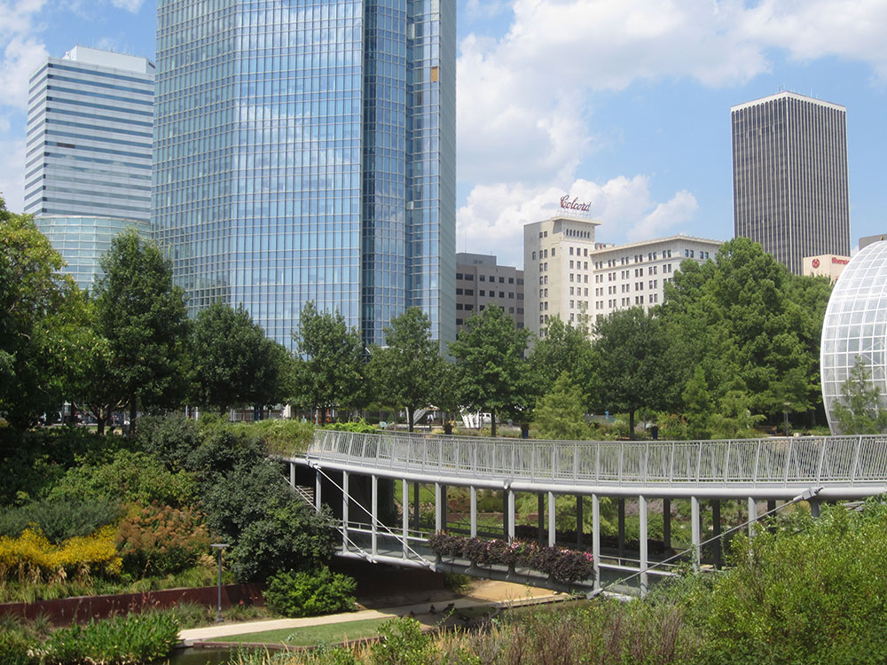
_-_022.jpg){kind=link}
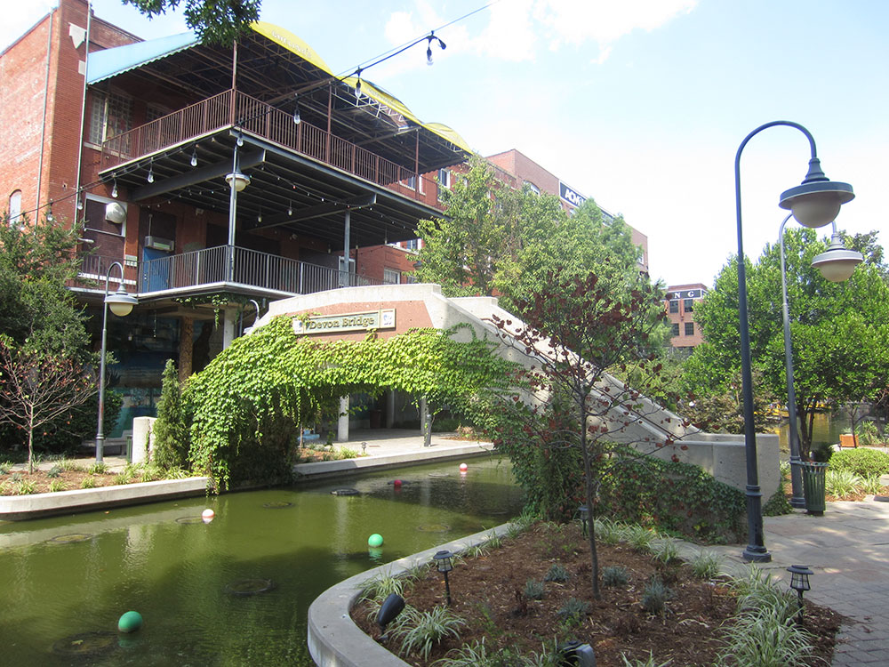
_-_093.jpg){kind=link}
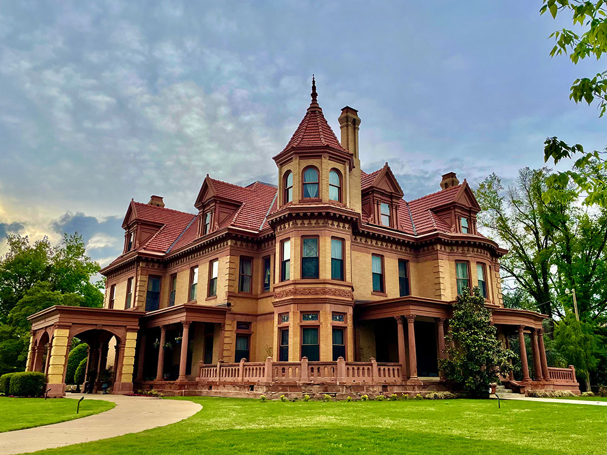

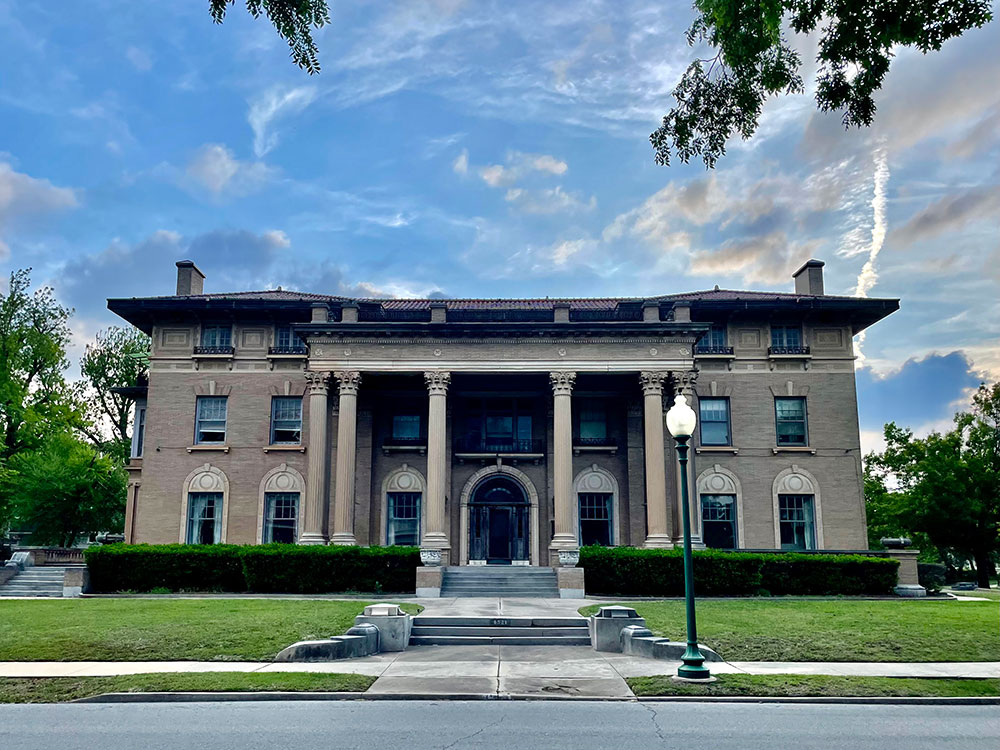